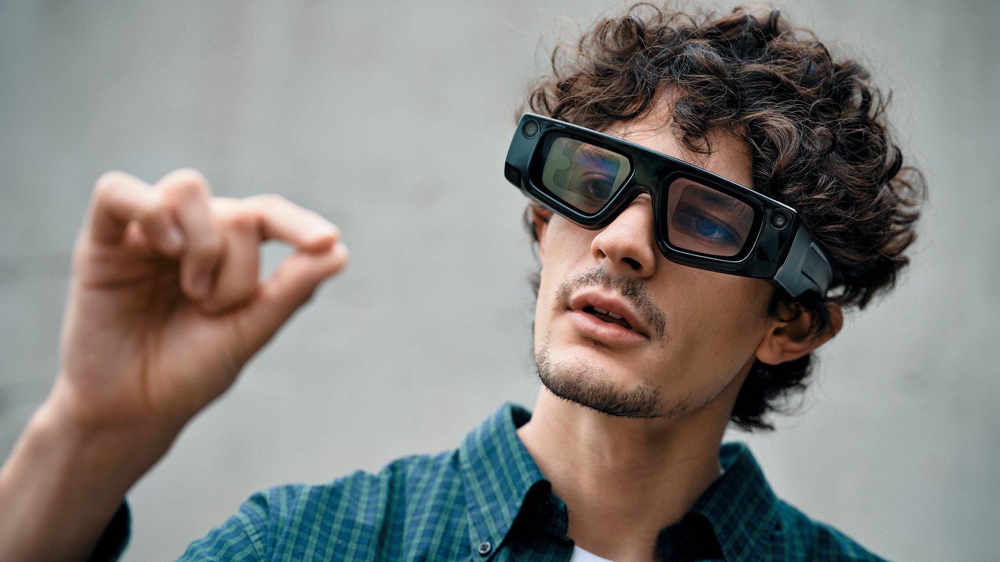

Meta Quest 3
The flagship of standalone VR devices, Meta Quest 3, is becoming more and more well-liked because of its excellent quality, price, and versatility. Building on Meta Quest 2's popularity, Quest 3 gives players better graphics, more potent computers, and mobility without requiring a PC or console connection. Because Meta Quest 3 is a completely stand-alone game, it may be played without a powerful computer or gaming console. Users can enjoy rich virtual worlds without the need for costly equipment because to its improved visuals and high performance. The device is particularly useful for interactive apps and games involving active movement because it has built-in sensors and cameras.
Apple Vision Pro
For pros in particular, Apple Vision Pro is a veritable VR revolution. There is more to this gadget than just a VR headset. Apple took things a step further by incorporating augmented reality (AR), which lets users interact with both real and virtual objects in a virtual setting. Micro OLED screens allow Vision Pro to provide the best resolution and image quality. This enables users to work with the smallest details, which is very helpful for engineers, doctors, and designers. The system is a great option for corporate users and business contexts because it also includes extremely accurate collaboration features.
Playstation VR2
The PlayStation VR2 is the next in Sony's popular line of virtual reality gaming systems. With a large selection of games and unique applications for PlayStation 5 customers, this headset is primarily designed with gamers in mind. It is anticipated that VR2's audience would significantly grow when PC compatibility is added in 2024. The PS VR2's high refresh rate, 4K resolution, and accurate motion tracking provide for an amazing gaming experience. Additionally, the headset supports foveated rendering technology, which enhances performance and visual quality by directing the system's graphics power toward objects in the user's field of vision.
Metaverse
The Metaverse is a spatial computing platform built on the foundation of blockchain technology that offers digital experiences that mimic or replace the physical world and all of its essential elements of civilization, including social interactions, money, trade, the economy, and property ownership.
FitXR
FitXR is transforming exercise into engaging, game-like experiences. In addition to cycling across future landscapes and boxing in virtual arenas, users can also relax in peaceful, otherworldly settings. By providing progress tracking and individualized coaching, these VR exercise apps increase motivation and consistency. As more people search for entertaining methods to keep active, virtual reality fitness is gaining popularity as a substitute for conventional workout regimens.
Dementia Reality
The HQSoftware team developed a VR training software called Dementia Reality to help provide excellent dementia care. Professionals and families can learn how to give compassionate dementia care by using the VR training, which demonstrates best practices and helps them avoid frequent mistakes that can cause emotional discomfort. This realistic virtual reality dementia care simulation highlights potential hazards while discussing behavior management, meals, everyday living difficulties, and effective communication techniques.
BodyScope
BodyScope is a virtual reality application that uses incredibly lifelike visuals to enhance medical education. Users can alter and create 3D models from their CT, MRI, or PET/CT images using the VR app. With customizable lighting, you may specifically inspect and rotate 3D models, scale them, apply picture filters, make unique slices, and use measurement tools for in-depth examination.
Nike Fit (Nike)
incorporates virtual and augmented reality with their actual storefronts. Consumers may enter a virtual reality environment to experience the many stages in Nike's supply chain and gain an understanding of how and where products are created, or they can scan sneakers or apparel to read information.
RealWear Navigator
The RealWear Navigator 520 is a rugged, hands-free, wearable computer designed for industrial use. It is part of RealWear’s lineup of head-mounted devices to enhance productivity and safety for frontline workers in various industries like manufacturing, maintenance, and field services.
Orion Glasses
Orion glasses are advanced augmented reality (AR) smart glasses developed by Meta (formerly Facebook), designed to integrate AR experiences into everyday life. These glasses aim to replace smartphones by offering features like hands-free calling, notifications, and immersive AR applications, powered by innovative display and connectivity technologies. They are part of Meta's broader push to lead in wearable AR technology.
Snapchat Spectacles
Snapchat Spectacles are smart glasses designed to capture hands-free video and photos from a first-person perspective, seamlessly integrating with the Snapchat app. These glasses feature built-in cameras and microphones, enabling users to record short videos or take pictures with a simple tap of a button, offering an immersive way to share moments in real time. Equipped with AR capabilities in newer models, Spectacles also allow users to overlay digital effects onto their surroundings, enhancing creativity and interactivity.

Google Lens
Google Lens is an augmented reality (AR) tool that uses image recognition and machine learning to provide real-time information about objects and scenes through your smartphone's camera. By simply pointing the camera at an object, text, or landmark, Google Lens can offer relevant data such as product details, translations, or even suggestions for similar items.
Pokemon Go
Pokémon GO is an augmented reality (AR) game that seamlessly integrates virtual elements into the real world, offering players an immersive experience where digital Pokémon creatures appear within their physical surroundings. By utilizing GPS technology and smartphone cameras, the game encourages players to explore outdoor environments, interact with virtual creatures, and engage in activities such as capturing, training, and battling Pokémon, transforming everyday locations into interactive gaming landscapes.
BMW Augmented Reality Cars
BMW integrates augmented reality into its driving experience through features like AR navigation, projecting real-time directions onto the windshield for safer and more intuitive guidance. This technology helps drivers stay focused on the road while accessing essential information seamlessly
Apple
Apple is the world's leading augmented reality (AR) platform, with hundreds of millions of AR-enabled devices, including iPhones and iPads outfitted with powerful sensors such as LiDAR and high-performance cameras. Using Apple's ARKit platform, developers can create immersive AR experiences that combine the digital and physical worlds, including motion tracking and scene interpretation. Thousands of AR apps on the App Store address a wide range of requirements, including gaming and entertainment, education, productivity, and e-commerce, demonstrating AR's transformative potential in everyday life. Apple is influencing the future of augmented reality, making it more accessible and impactful than ever before, through constant hardware improvements such as M-series CPUs and software updates.